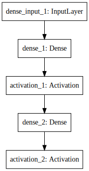

In [1]:
import keras
Using TensorFlow backend.
In [2]:
import tensorflow
モジュール性¶
- モデルとは、できるだけ制約を少なく接続可能
- 完全構成可能な独立したモジュールのシーケンスまたはグラフとして理解されています。
SequentialモデルでKerasに触れてみよう¶
- Sequential (系列) モデルは層を積み重ねたもの。
- Sequential モデルはコンストラクタに層のインスタンスのリストを与えることで作れる
- 単純に .add() メソッドを用いて層を追加できる。
In [3]:
from keras.models import Sequential
from keras.layers import Dense, Activation
model = Sequential([
Dense(32, input_dim=784),
Activation('relu'),
])
model.add(Dense(10))
model.add(Activation('softmax'))
model
Out[3]:
<keras.models.Sequential at 0x1139724e0>
モデルの可視化¶
In [7]:
!pip freeze | grep pydot
pydot-ng==1.0.0
In [15]:
from IPython.display import Image, display, SVG
from keras.utils.visualize_util import plot
from keras.utils.visualize_util import model_to_dot
# plot using model_to_dot
plot(model, to_file='model.png')
display(Image("model.png"))
SVG(model_to_dot(model).create(prog='dot', format='svg'))

Out[15]:

In [16]:
model.summary()
____________________________________________________________________________________________________
Layer (type) Output Shape Param # Connected to
====================================================================================================
dense_1 (Dense) (None, 32) 25120 dense_input_1[0][0]
____________________________________________________________________________________________________
activation_1 (Activation) (None, 32) 0 dense_1[0][0]
____________________________________________________________________________________________________
dense_2 (Dense) (None, 10) 330 activation_1[0][0]
____________________________________________________________________________________________________
activation_2 (Activation) (None, 10) 0 dense_2[0][0]
====================================================================================================
Total params: 25,450
Trainable params: 25,450
Non-trainable params: 0
____________________________________________________________________________________________________
In [32]:
Sequential.from_config(model.get_config()).set_weights(model.get_weights())
In [28]:
import yaml
import io
import json
json.loads(model.to_json()) == yaml.load(io.StringIO(model.to_yaml()))
Out[28]:
False
In [36]:
from keras.models import model_from_json, model_from_yaml, model_from_config
In [37]:
model.save_weights("model_weights_hdf5")
In [64]:
!ls -lh *hdf*
-rw-r--r-- 1 knt staff 107K 2 17 04:17 model_weights_hdf5
In [79]:
# https://github.com/h5py/h5py
import h5py
with h5py.File("model_weights_hdf5", "r") as h5:
print(type(h5), h5.name)
for k, v in h5.items():
print(k, v, type(v), v.name)
print("-"*10)
h5.visit(print)
print("-"*10)
print(list(h5.attrs))
print(h5.attrs["layer_names"])
#h5.attrs["new_attr"] = "values"
#print(list(h5.attrs), h5.attrs["new_attr"])
print("-"*10)
print(list(h5["/activation_1"].values()))
print(h5.get("/dense_1"))
print(h5.get("/dense_3", "default"))
print(list(h5["/dense_1"].values()))
print("-"*10)
print(h5["/dense_1/dense_1_b:0"].value)
<class 'h5py._hl.files.File'> /
activation_1 <HDF5 group "/activation_1" (0 members)> <class 'h5py._hl.group.Group'> /activation_1
activation_2 <HDF5 group "/activation_2" (0 members)> <class 'h5py._hl.group.Group'> /activation_2
dense_1 <HDF5 group "/dense_1" (2 members)> <class 'h5py._hl.group.Group'> /dense_1
dense_2 <HDF5 group "/dense_2" (2 members)> <class 'h5py._hl.group.Group'> /dense_2
----------
activation_1
activation_2
dense_1
dense_1/dense_1_W:0
dense_1/dense_1_b:0
dense_2
dense_2/dense_2_W:0
dense_2/dense_2_b:0
----------
['layer_names']
[b'dense_1' b'activation_1' b'dense_2' b'activation_2']
----------
[]
<HDF5 group "/dense_1" (2 members)>
default
[<HDF5 dataset "dense_1_W:0": shape (784, 32), type "<f4">, <HDF5 dataset "dense_1_b:0": shape (32,), type "<f4">]
----------
[ 0. 0. 0. 0. 0. 0. 0. 0. 0. 0. 0. 0. 0. 0. 0. 0. 0. 0.
0. 0. 0. 0. 0. 0. 0. 0. 0. 0. 0. 0. 0. 0.]
In [88]:
import numpy as np
In [130]:
with h5py.File("file.hdf5", "w") as f:
dset = f.create_dataset("mydataset", shape=(100,), dtype='i', data=np.arange(100))
print(type(dset), dset, dset.name, dset.shape)
print(dset.value, type(dset.value))
print(dset[0:2])
print("-"*10)
group = f.create_group("group")
print(type(group), group, group.name)
print("-"*10)
dset2 = group.create_dataset("another_dataset", data=np.arange(6).reshape(2, 3), dtype="f")
dset2
print(type(dset2), dset2, dset2.name, dset2[0, 1])
print("-"*10)
sub_group = group.create_group("sub_group")
sub_group["v1_ndarray"] = np.array([1.0])
sub_group["v2_float"] = 2.0
sub_group["v3_int"] = 3
print(type(sub_group), sub_group, sub_group.name)
print("-"*10)
soft_link = h5py.SoftLink("/group")
external_link = h5py.ExternalLink("model_weights_hdf5", "/dense_1/dense_1_b:0")
print(type(soft_link), soft_link, soft_link.path)
print(type(external_link), external_link, external_link.path, external_link.filename)
print("-"*10)
sub_group["alias_group"] = soft_link
sub_group['ext_link'] = external_link
print(type(sub_group["alias_group"]), sub_group["alias_group"])
print(type(sub_group["ext_link"]), sub_group["ext_link"])
print("-"*10)
f.visit(print)
print("-"*10)
<class 'h5py._hl.dataset.Dataset'> <HDF5 dataset "mydataset": shape (100,), type "<i4"> /mydataset (100,)
[ 0 1 2 3 4 5 6 7 8 9 10 11 12 13 14 15 16 17 18 19 20 21 22 23 24
25 26 27 28 29 30 31 32 33 34 35 36 37 38 39 40 41 42 43 44 45 46 47 48 49
50 51 52 53 54 55 56 57 58 59 60 61 62 63 64 65 66 67 68 69 70 71 72 73 74
75 76 77 78 79 80 81 82 83 84 85 86 87 88 89 90 91 92 93 94 95 96 97 98 99] <class 'numpy.ndarray'>
[0 1]
----------
<class 'h5py._hl.group.Group'> <HDF5 group "/group" (0 members)> /group
----------
<class 'h5py._hl.dataset.Dataset'> <HDF5 dataset "another_dataset": shape (2, 3), type "<f4"> /group/another_dataset 1.0
----------
<class 'h5py._hl.group.Group'> <HDF5 group "/group/sub_group" (3 members)> /group/sub_group
----------
<class 'h5py._hl.group.SoftLink'> <SoftLink to "/group"> /group
<class 'h5py._hl.group.ExternalLink'> <ExternalLink to "/dense_1/dense_1_b:0" in file "model_weights_hdf5" /dense_1/dense_1_b:0 model_weights_hdf5
----------
<class 'h5py._hl.group.Group'> <HDF5 group "/group/sub_group/alias_group" (2 members)>
<class 'h5py._hl.dataset.Dataset'> <HDF5 dataset "dense_1_b:0": shape (32,), type "<f4">
----------
group
group/another_dataset
group/sub_group
group/sub_group/v1_ndarray
group/sub_group/v2_float
group/sub_group/v3_int
mydataset
----------
In [132]:
import pandas as pd
import seaborn as sns
from IPython.display import display
titanic = sns.load_dataset("titanic")
titanic.head(2)
Out[132]:
| survived | pclass | sex | age | sibsp | parch | fare | embarked | class | who | adult_male | deck | embark_town | alive | alone | |
|---|---|---|---|---|---|---|---|---|---|---|---|---|---|---|---|
| 0 | 0 | 3 | male | 22.0 | 1 | 0 | 7.2500 | S | Third | man | True | NaN | Southampton | no | False |
| 1 | 1 | 1 | female | 38.0 | 1 | 0 | 71.2833 | C | First | woman | False | C | Cherbourg | yes | False |
In [160]:
# http://pandas.pydata.org/pandas-docs/stable/io.html#hdf5-pytables
# http://pandas.pydata.org/pandas-docs/stable/generated/pandas.DataFrame.to_hdf.html
with pd.HDFStore('titanic_head_export.h5', mode="w") as store_export:
print(store_export)
print("-"*10)
store_export.append('key', titanic.head())
store_export.append('key', titanic.tail(), data_columns=titanic.columns)
print(store_export)
print("-"*10)
store_export.remove('key')
store_export.put('key2/sub', titanic.tail(), data_columns=titanic.columns, format="table")
store_export.append('key2/sub', titanic.tail())
print(store_export)
print("-"*10)
display(store_export["key2/sub"].head(2))
display(store_export.select("key2/sub").tail(2))
<class 'pandas.io.pytables.HDFStore'>
File path: titanic_head_export.h5
Empty
----------
<class 'pandas.io.pytables.HDFStore'>
File path: titanic_head_export.h5
/key frame_table (typ->appendable,nrows->10,ncols->15,indexers->[index])
/key/meta/values_block_0/meta series_table (typ->appendable,nrows->3,ncols->1,indexers->[index],dc->[values])
/key/meta/values_block_1/meta series_table (typ->appendable,nrows->7,ncols->1,indexers->[index],dc->[values])
----------
/Users/knt/.pyenv/versions/anaconda3-4.2.0/lib/python3.5/site-packages/tables/path.py:118: NaturalNameWarning: object name is a Python keyword: 'class'; you will not be able to use natural naming to access this object; using ``getattr()`` will still work, though
% (name, _warnInfo), NaturalNameWarning)
<class 'pandas.io.pytables.HDFStore'>
File path: titanic_head_export.h5
/key2/sub frame_table (typ->appendable,nrows->10,ncols->15,indexers->[index],dc->[survived,pclass,sex,age,sibsp,parch,fare,embarked,class,who,adult_male,deck,embark_town,alive,alone])
/key2/sub/meta/class/meta series_table (typ->appendable,nrows->3,ncols->1,indexers->[index],dc->[values])
/key2/sub/meta/deck/meta series_table (typ->appendable,nrows->7,ncols->1,indexers->[index],dc->[values])
----------
| survived | pclass | sex | age | sibsp | parch | fare | embarked | class | who | adult_male | deck | embark_town | alive | alone | |
|---|---|---|---|---|---|---|---|---|---|---|---|---|---|---|---|
| 886 | 0 | 2 | male | 27.0 | 0 | 0 | 13.0 | S | Second | man | True | NaN | Southampton | no | True |
| 887 | 1 | 1 | female | 19.0 | 0 | 0 | 30.0 | S | First | woman | False | B | Southampton | yes | True |
| survived | pclass | sex | age | sibsp | parch | fare | embarked | class | who | adult_male | deck | embark_town | alive | alone | |
|---|---|---|---|---|---|---|---|---|---|---|---|---|---|---|---|
| 889 | 1 | 1 | male | 26.0 | 0 | 0 | 30.00 | C | First | man | True | C | Cherbourg | yes | True |
| 890 | 0 | 3 | male | 32.0 | 0 | 0 | 7.75 | Q | Third | man | True | NaN | Queenstown | no | True |
In [144]:
titanic.head().to_hdf("titanic_head.hdf5", "key_hdf", mode="w", format="table")
titanic_df = pd.read_hdf("titanic_head.hdf5")
display(titanic_df)
with h5py.File("titanic_head.hdf5", mode="r") as titanic_hdf:
titanic_hdf.visit(print)
| survived | pclass | sex | age | sibsp | parch | fare | embarked | class | who | adult_male | deck | embark_town | alive | alone | |
|---|---|---|---|---|---|---|---|---|---|---|---|---|---|---|---|
| 0 | 0 | 3 | male | 22.0 | 1 | 0 | 7.2500 | S | Third | man | True | NaN | Southampton | no | False |
| 1 | 1 | 1 | female | 38.0 | 1 | 0 | 71.2833 | C | First | woman | False | C | Cherbourg | yes | False |
| 2 | 1 | 3 | female | 26.0 | 0 | 0 | 7.9250 | S | Third | woman | False | NaN | Southampton | yes | True |
| 3 | 1 | 1 | female | 35.0 | 1 | 0 | 53.1000 | S | First | woman | False | C | Southampton | yes | False |
| 4 | 0 | 3 | male | 35.0 | 0 | 0 | 8.0500 | S | Third | man | True | NaN | Southampton | no | True |
key_hdf
key_hdf/_i_table
key_hdf/_i_table/index
key_hdf/_i_table/index/abounds
key_hdf/_i_table/index/bounds
key_hdf/_i_table/index/indices
key_hdf/_i_table/index/indicesLR
key_hdf/_i_table/index/mbounds
key_hdf/_i_table/index/mranges
key_hdf/_i_table/index/ranges
key_hdf/_i_table/index/sorted
key_hdf/_i_table/index/sortedLR
key_hdf/_i_table/index/zbounds
key_hdf/meta
key_hdf/meta/values_block_0
key_hdf/meta/values_block_0/meta
key_hdf/meta/values_block_0/meta/_i_table
key_hdf/meta/values_block_0/meta/_i_table/index
key_hdf/meta/values_block_0/meta/_i_table/index/abounds
key_hdf/meta/values_block_0/meta/_i_table/index/bounds
key_hdf/meta/values_block_0/meta/_i_table/index/indices
key_hdf/meta/values_block_0/meta/_i_table/index/indicesLR
key_hdf/meta/values_block_0/meta/_i_table/index/mbounds
key_hdf/meta/values_block_0/meta/_i_table/index/mranges
key_hdf/meta/values_block_0/meta/_i_table/index/ranges
key_hdf/meta/values_block_0/meta/_i_table/index/sorted
key_hdf/meta/values_block_0/meta/_i_table/index/sortedLR
key_hdf/meta/values_block_0/meta/_i_table/index/zbounds
key_hdf/meta/values_block_0/meta/_i_table/values
key_hdf/meta/values_block_0/meta/_i_table/values/abounds
key_hdf/meta/values_block_0/meta/_i_table/values/bounds
key_hdf/meta/values_block_0/meta/_i_table/values/indices
key_hdf/meta/values_block_0/meta/_i_table/values/indicesLR
key_hdf/meta/values_block_0/meta/_i_table/values/mbounds
key_hdf/meta/values_block_0/meta/_i_table/values/mranges
key_hdf/meta/values_block_0/meta/_i_table/values/ranges
key_hdf/meta/values_block_0/meta/_i_table/values/sorted
key_hdf/meta/values_block_0/meta/_i_table/values/sortedLR
key_hdf/meta/values_block_0/meta/_i_table/values/zbounds
key_hdf/meta/values_block_0/meta/table
key_hdf/meta/values_block_1
key_hdf/meta/values_block_1/meta
key_hdf/meta/values_block_1/meta/_i_table
key_hdf/meta/values_block_1/meta/_i_table/index
key_hdf/meta/values_block_1/meta/_i_table/index/abounds
key_hdf/meta/values_block_1/meta/_i_table/index/bounds
key_hdf/meta/values_block_1/meta/_i_table/index/indices
key_hdf/meta/values_block_1/meta/_i_table/index/indicesLR
key_hdf/meta/values_block_1/meta/_i_table/index/mbounds
key_hdf/meta/values_block_1/meta/_i_table/index/mranges
key_hdf/meta/values_block_1/meta/_i_table/index/ranges
key_hdf/meta/values_block_1/meta/_i_table/index/sorted
key_hdf/meta/values_block_1/meta/_i_table/index/sortedLR
key_hdf/meta/values_block_1/meta/_i_table/index/zbounds
key_hdf/meta/values_block_1/meta/_i_table/values
key_hdf/meta/values_block_1/meta/_i_table/values/abounds
key_hdf/meta/values_block_1/meta/_i_table/values/bounds
key_hdf/meta/values_block_1/meta/_i_table/values/indices
key_hdf/meta/values_block_1/meta/_i_table/values/indicesLR
key_hdf/meta/values_block_1/meta/_i_table/values/mbounds
key_hdf/meta/values_block_1/meta/_i_table/values/mranges
key_hdf/meta/values_block_1/meta/_i_table/values/ranges
key_hdf/meta/values_block_1/meta/_i_table/values/sorted
key_hdf/meta/values_block_1/meta/_i_table/values/sortedLR
key_hdf/meta/values_block_1/meta/_i_table/values/zbounds
key_hdf/meta/values_block_1/meta/table
key_hdf/table
入力の形を指定する¶
- 最初の層では入力の形を指定しなければならない (それ以降の層では必要ない) 。 指定する方法は複数ある:
- 最初の層にinput_shape引数を与える。これは形を表すタプル (タプルの要素は整数かNoneでNoneはどんなサイズでも良いことを表す。) input_shapeにbatchサイズは含まれない。
- 代わりにbatch_input_shape引数を与える。ここではbatchサイズが含まれる。これは固定長のbatchサイズを指定するときに便利である (例えば stateful RNN) 。
- Denseなどの一部の2Dの層では入力の形をinput_dimで指定でき、一部の3Dの層ではinput_dimとinput_lengthで指定できる。
- したがって、次の3つのコードは等価である。
model = Sequential()
model.add(Dense(32, input_shape=(784,)))
model.add(Dense(32, batch_input_shape=(None, 784)))
model.add(Dense(32, input_dim=784))
# 2nd
# note that batch dimension is "None" here,
# so the model will be able to process batches of any size.
# 次の3つのコードも等価である。
model.add(LSTM(32, input_shape=(10, 64)))
model.add(LSTM(32, batch_input_shape=(None, 10, 64)))
model.add(LSTM(32, input_length=10, input_dim=64))
In [ ]:
Compile¶
目的関数¶
complileのloss¶
- regression ?
- mean_squared_error / mse
- mean_absolute_error / mae
- mean_absolute_percentage_error / mape
- mean_squared_logarithmic_error / msle
- squared_hinge
- hinge
- binary_crossentropy
- logloss
- categorical_crossentropy
- multi-class-loglossとしても知られています
- Note: この目的関数を使うには，ラベルがバイナリ配列であり，その形状が(nb_samples, nb_classes)であることが必要です．
- sparse_categorical_crossentropy
- categorical_crossentropyと同じですが，スパースラベルを取る点で違います
- Note: ラベルの次元と出力の次元が同じである必要があります
- 例えば，ラベル形状を拡張するために，np.expand_dims(y, -1)を用いて新しく次元を追加する必要があるかもしれません．
- kullback_leibler_divergence
- kld
- 予測した確率分布Qから真の確率分布Pへの情報ゲイン．2つの分布の異なりの度合いを得る．
- poisson
- (予測 - 正解 * log(予測))の平均
- cosine_proximity
- 予測と正解間のコサイン近似の負の平均．
In [ ]: